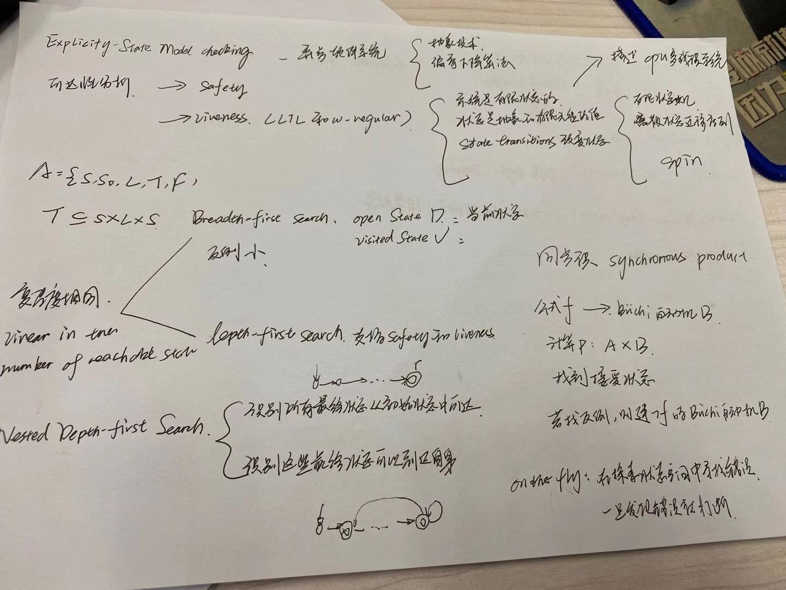

english
sentence
Formal modeling of cryptographic protocols:Dolev-Yao model
Formal verification of cryptographic protocols requires an abstract model of agents’ capabilities and communications, and the Dolev-Yao model has been the bulwark of such modelling. This model and its various extensions have been the object of study for the last 30 years. This model views the message space as a term algebra. Term derivation rules specify how agents can obtain new terms from old onesThere are various ways of presenting the terms under consideration in the Dolev-Yao model. One way is to present a term grammar with a derivation system for deriving new terms
Another way to present Dolev-Yao terms is using an equational theory.. In this equational theory system, we will expand the signature to include destructors as well, and then provide equations for when a term formed by application of multiple functions from the signature might be equivalent to a smaller term.
true and false are 0-ary functions standing for the boolean values true and false, which we require to ensure that the result of applying a ver to a sign, for example, is also a term in our syntax.
hereafter：之后；masquerade：冒充 forgery：伪造
The notion of what messages an agent can construct at any given point of time is formalized by a “knowledge state”, which represents all the terms and assertions that each agent knows.
Security properties are of two types – trace properties and equivalence properties. Trace properties are those which can be defined for each run of the protocol. A protocol is said to satisfy such a property if every valid run of the protocol satisfies the property. Equivalence properties are those which, if satisfied, mean that the adversary cannot distinguish between two processes. Equivalence properties, therefore, require the inspection of multiple runs of both processes under consideration, unlike trace properties.
we believe we have achieved promis- ing success: in all cases, we seem to have done as well or better than other tools.In order to facilitate com- parison between the various tools and approaches, we have focussed on protocols that have been analyzed by others. We are also analyzing newer protocols, in hopes of reporting new discoveries not already uncovered by previous researchers.
More specifically: we shall use the notation wp(S, R), where S denotes a statement list and R some condition on the state of the system, to denote the weakest precondition for the initial state of the system such that activation of S is guaranteed to lead to a properly terminating activity leaving the system in a final state satisfying the post-condition R. Such a wp--which is called "a predicate transformer" because it associates a pre-condition to any post-condition R--has, by definition, the following properties.
As an example of the derivation of XXX we shall dericve a XX for XX

在数学里，海廷代数（Heyting algebra）是一特殊的偏序集，经由广义化布尔代数而成，得名于阿兰德·海廷。海廷代数是作为直觉主义逻辑的模型而产生的，是一种排中律不总是成立的逻辑。完全海廷代数是无点拓扑学的核心。